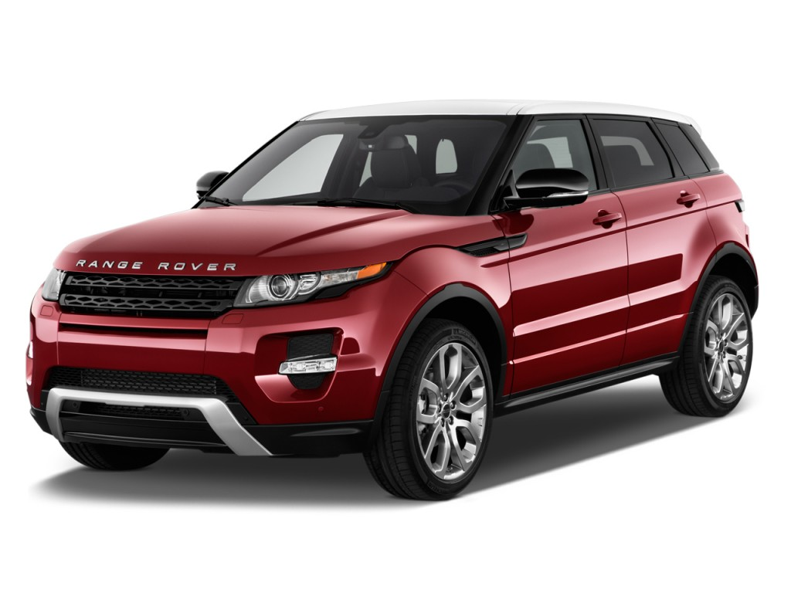

O Land Rover Evoque 2014 é um SUV compacto produzido pela montadora britânica Land Rover. O modelo é equipado com um motor 2.0 turbo de quatro cilindros, que gera 240 cv de potência e 34,7 kgfm de torque. O carro tem uma velocidade máxima de 217 km/h e pode acelerar de 0 a 100 km/h em 7,6 segundos. O Evoque 2014 vem com uma transmissão automática de nove marchas. O modelo também possui suspensão dianteira do tipo McPherson e traseira do tipo multibraço, ambas com barra estabilizadora e molas helicoidais. O tanque de combustível tem capacidade para 70 litros e o porta-malas tem capacidade para 575 litros 3. O Evoque 2014 vem com airbags para motorista e passageiro, freios ABS, distribuição eletrônica de frenagem, ar-condicionado, travas elétricas, piloto automático, vidros elétricos dianteiros, computador de bordo, sensor de farol e farol de neblina. O preço do Land Rover Evoque 2014 varia de R$192,000.00 a R$277,900.00 .
Uma curiosidade interessante sobre o Evoque é que ele foi o primeiro carro a ser equipado com uma transmissão automática de nove marchas . Além disso, o Evoque é conhecido por seu design moderno e elegante, que o torna um dos carros mais atraentes da categoria SUV compacto